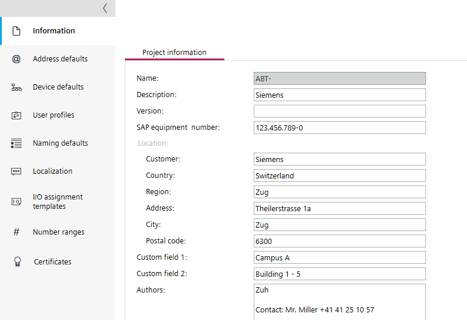

设置
使用Settings组件来定义适用于整个项目及其对象的默认设置。
如果您尚未为您的用户设置密码，ABT 站点将在以下位置打开您的项目Settings > User profiles.
User profiles

这Settings组件包含以下任务。
任务 | 描述 |
|---|---|
输入附加项目信息，例如地址、联系人等。 | |
定义项目的网络设置。 IP addressing | |
定义项目的设备默认值。
| |
定义项目的用户配置文件。 | |
设置项目内对象的默认名称和前缀。 Object names tab | |
定义时区和语言设置。 | |
管理已保存的 I/O 作业。 | |
定义组号码、房间 IDs 和中央功能的号码范围。 | |
Managing Web root certificates Managing BACnet/SC root certificates Managing ABT Site BACnet/SC operational certificate Managing IEEE 802.1X certificates 显示外部 CSR 签名活动 |